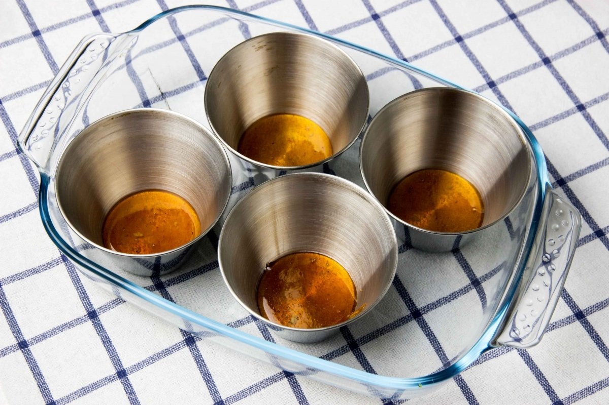

Flan

El flan es uno de los postres preferidos para todos. Es un postre muy sencillo de hacer, que tiene, además, múltiples versiones: flan de huevo, de café, de chocolate... En esta ocasión haremos el de vainilla, ideal para desayunos, meriendas y postres.
- 250ml de flan
- 250ml de leche
- 100gr de azúcar
- 2 huevos
- Esencia de vainilla
- Agua
Ingredientes:
- Sartén
- Bowl
- Batidora
- Olla
- Molde de flan
- Papel de aluminio
Utencilios:
- Templando la leche y echándola en un bol, agregamos el azúcar y mezclamos hasta que se disuelvan. Incorporamos los huevos y la esencia de vainilla. Mezclamos hasta conseguir una mezcla homogénea.
- Para el caramelo, echamos 50 gr. de azúcar en una sartén e incorporamos tres cucharadas de agua. Ponemos al fuego y vamos removiendo de vez en cuando. Cuando la mezcla adquiera un color dorado, vertemos el caramelo en el molde del flan.
- Echamos la mezcla del flan en el molde y lo colocamos todo en una olla express con un poco de agua. Tapamos la flanera con un plato y ponemos la tapa a la olla. Encendemos el fuego. Luego de un rato, bajamos el fuego y lo dejamos tres minutos. Tras ésto, retiramos del fuego.
- Cuando se haya enfriado un poco, tapamos con papel de aluminio y lo metemos en el frigorífico durante, al menos, 5 horas.
- Pasado ese tiempo, sacamos el flan del frigorífico, desmoldamos...¡y a disfrutar! 